Les différents docteurs.
Le premier docteur (1963 - 1966)
Joué par William Hartnell.
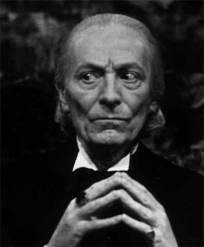Le second docteur (1966 - 1969)
Joué par Patrick Troughton.
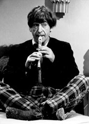Le troisième docteur (1970 - 1974)
Joué par Jon Pertwee.
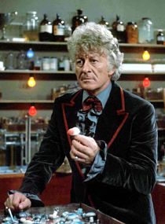Le quatrième docteur (1974 - 1981)
Joué par Tom Baker.
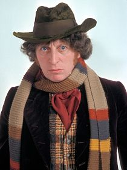Le cinquième docteur (1981 - 1984)
Joué par Peter Davison.
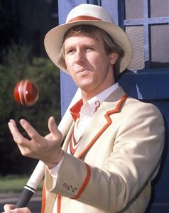Le sixième docteur (1984 - 1986) :
Joué par Colin Baker.
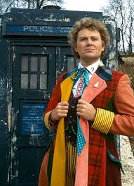Le septième docteur (1987 - 1989 et 1996) :
Joué par Sylvester McCoy.
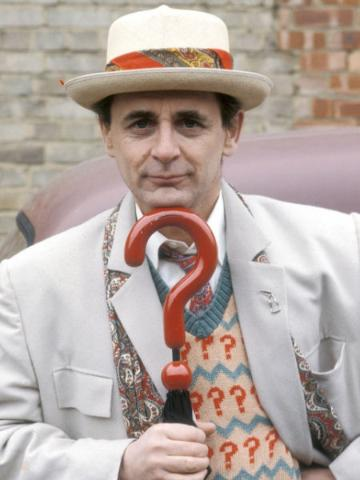Le huitième docteur (1996) :
Joué par Paul McGann.
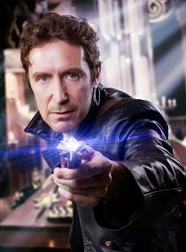Le war docteur (2013) :
Joué par John Hurt.
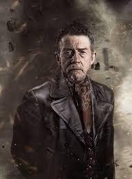Le neuvième docteur (2005) :
Joué par Christopher Eccleston.
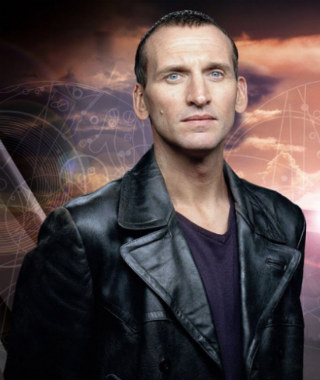Le dixième docteur (2005 - 2010) :
Joué par David Tennant.
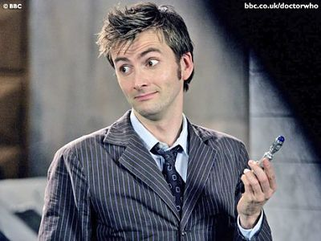Le onzième docteur (2010 - 2013) :
Joué par Matt Smith.
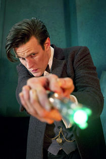Le douzième docteur (2013 - ...) :
Joué par Peter Capaldi.
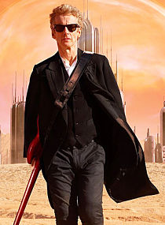Le treizième docteur :
Joué par ?